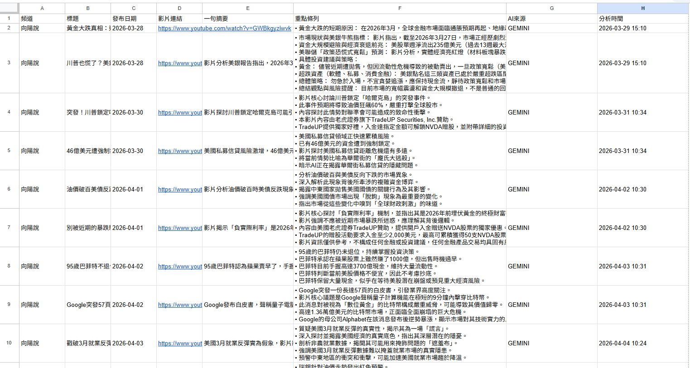
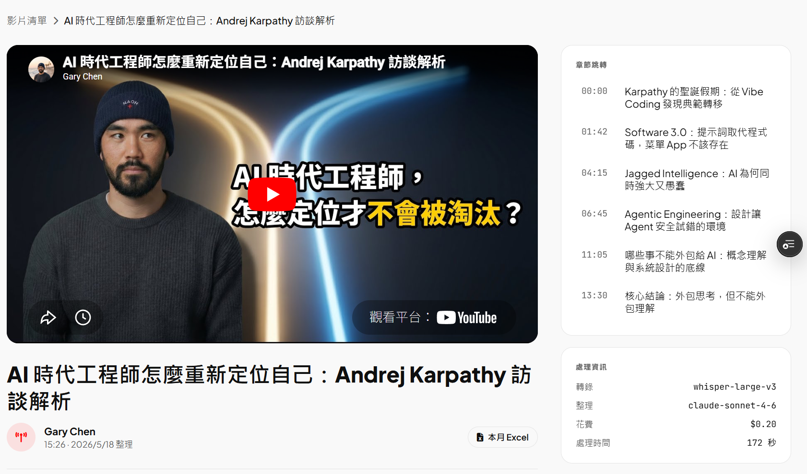
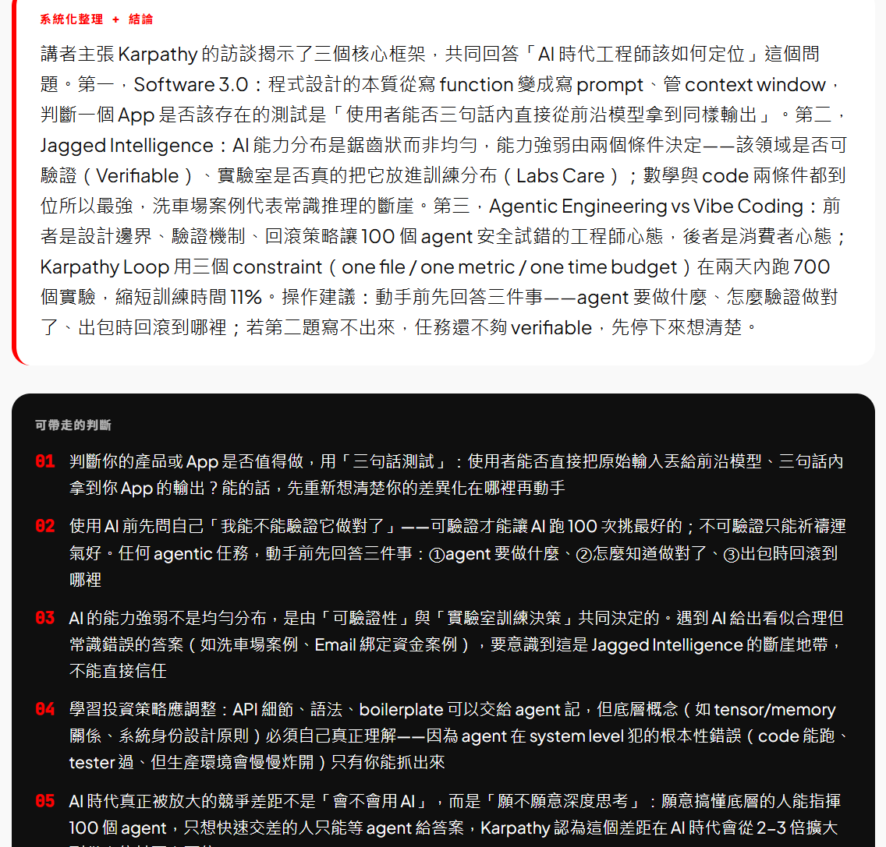

同一個需求 — 把 YouTube 影片轉成可以帶走的中文整理 — 用兩種完全不同的工程方法各做了一次。這篇紀錄兩個世代的架構差異，以及 V1 留下了什麼問題、V2 是用什麼方法接手。
# 問題：30 分鐘影片只想帶走 5 條判斷
每天會看不少 YouTube 影片，但回放本身效率很低 — 30 分鐘的內容裡，真正能帶走的判斷可能只有 5 條。需要的是壓縮過後可以直接歸檔的整理：
- 章節跳轉，能直接跳到某段討論的時間點
- 系統化重點，把整支影片用幾段話交代清楚
- 可帶走的判斷，獨立成立、不需要回看影片就能理解
- Excel 留底，方便事後彙整月度看了什麼
兩個世代都在解這個問題，差別在工程方法 — 以及這個方法能做到多深。
# V1：n8n + Python + GEMINI + Excel
第一個版本用 n8n 串起整條工作流。架構單純：
手動丟連結 → n8n webhook
→ Python (yt-dlp + transcript)
→ GEMINI generateContent
→ Google Sheets append
V1 的特性
| 面向 | 實作 |
|---|---|
| 觸發方式 | 手動把 URL 丟進 n8n webhook |
| 整理引擎 | GEMINI 純文字摘要（只讀 transcript） |
| 輸出結構 | 一句摘要 + 條列 5–8 點，存進 Google Sheets 一個 row |
| 介面 | 沒有獨立 UI，看 Google Sheets |
| 處理時間 | 2–5 分鐘 / 支，不可見（n8n 跑完才寫入） |
V1 解決的問題與未解的問題
V1 的價值在於把流程跑通。從手動寫筆記變成自動化產出條列，這一步替後續節省了很多時間。但有幾件事 V1 沒能處理：
- 影片畫面的資訊全丟。講者展示的 slide、白板、截圖、表格 — transcript 只有口語、抓不到視覺資訊。對技術型內容影響最大。
- 沒有章節跳轉。事後要回看某段討論，只能用關鍵字在 transcript 裡 ctrl+F。
- 摘要層級偏單一。一句摘要 + 條列適合快速 scan，但「值得獨立記下來的判斷」需要更結構化的呈現。
- 改一條 prompt 要改 n8n。工作流的 visual editor 在原型階段方便，但版本控制、回滾、code review 都不順手。
# V2：Next.js + Firebase + Claude Vision + 本機 Worker
第二個版本整個架構重做。從「n8n 工作流」變成「web app + queue + 本機 worker」：
網頁登入 + 貼 URL
↓
[Vercel /api/videos/process] → Firestore status=queued
↑↓
[本機 worker daemon] ← 桌機 24h 開著
- yt-dlp + Whisper → transcript + meta
- Claude Call 1 (text) → ChapterPlan + 要看畫面的 timestamps
- extract_frames.py → 每章一張 frame
- Firebase Storage upload
- Claude Call 2 (text+vision) → StructuredVideoFull
↓
[Vercel /v/[id]] onSnapshot → 渲染完整報告
核心改變：2-Call Vision Pipeline
V2 最關鍵的工程決策是把整理拆成兩次 LLM 呼叫，而不是把整支 transcript 一次丟給模型：
- Call 1（純文字）：讀 transcript，先規劃章節結構 — 每個章節幾分到幾分、主題是什麼、哪些 timestamp 需要看畫面（例如講者展示了表格、引用了一張圖）。輸出是一個 ChapterPlan JSON。
- 中間步驟：根據 Call 1 提的時間點，從原始影片抽出對應 frames（用 ffmpeg）。每個章節各拿一張代表性畫面。
- Call 2（文字 + vision）：把 transcript、章節骨架、frame 圖片一起餵給 model，產出最終結構化整理 — 含每章重點、可帶走的判斷、frame 描述、信心註記。
這樣做的好處是只在「需要看畫面」的地方付 vision token 的錢，而不是整支影片每秒抽一張。Call 1 規劃得準的話，每支 30 分鐘的影片大約抽 5–8 張 frame 就夠。

V2 暴露的元資訊
介面右下角會顯示這支影片的處理紀錄：
- 轉錄：whisper-large-v3
- 整理：claude-sonnet-4-6
- 花費：每支約 0.10–0.20 USD
- 處理時間：3 分鐘左右
這個透明度在 V1 看不到。每支影片成本與時間直接攤開後，要不要再做一次、要不要換模型，判斷依據變清楚。
# 中途的轉折：執行位置是設計決策
V2 在落地過程中，「程式碼跑在哪裡」本身就改了三次。這部分值得獨立紀錄，因為它揭露了一個容易被當成「之後再說」的問題。
| 嘗試 | 執行位置 | 結果 |
|---|---|---|
| Try 1 | Vercel function 直接跑 yt-dlp | Vercel runtime 缺 ffmpeg、Linux ARM 不相容，落地失敗 |
| Try 2 | GitHub Actions runner | 3 支 e2e 全失敗，YouTube 回「Sign in to confirm you’re not a bot」 — datacenter IP 段被擋 |
| Try 3 | 本機 worker daemon（家用 IP） | 通過。桌機 24h 開著當 Firestore listener，雲端 queue 把工作丟下來在家用 IP 跑 |
這次踩坑可以濃縮成一句教訓：
自動化 pipeline 的「執行位置」是設計決策，牽涉反爬策略。某些目標站對特定 IP 段有限制，hosting 選錯地方，整個架構需要重做。
V2 最後的形態是雲端 + 本機混合：認證、UI、queue 全在 Vercel + Firebase；實際下載與處理留在家用 IP 上。這個分工是被 YouTube 的反爬規則逼出來的，不是一開始就規劃好的。
# 兩個世代的對照
| 維度 | V1 | V2 |
|---|---|---|
| 觸發方式 | 手動丟 webhook | 網頁登入 + 貼 URL |
| 整理模型 | GEMINI（純文字） | Claude Sonnet 4.6（vision） |
| 輸入維度 | transcript | transcript + chapter frames |
| 章節跳轉 | 無 | 有，YouTube 嵌入 + 時間戳 |
| 輸出層級 | 一句摘要 + 條列 | 系統化整理 + 可帶走判斷 + 章節 frame 描述 |
| 介面 | Google Sheets | Next.js web app |
| 執行位置 | n8n 雲端 + Python local | Vercel queue + 本機 worker daemon |
| 成本可見性 | 不可見 | 每支顯示花費 + 處理時間 |
| Excel 匯出 | 即輸出本身 | 每月一鍵匯出 |
# 下一個轉折
目前 V2 的本機 worker 綁定在一台桌機上。下一個變化點是把 worker 打包成可分發的安裝程式，讓家用 IP 不再綁定在一台特定電腦，整套架構從「個人工具」往「可以分發」靠一步。
Stack：Next.js 16 ・ Tailwind v4 ・ Firebase Auth + Firestore + Storage ・ Vercel ・ Claude Sonnet 4.6 ・ Whisper Large v3 ・ yt-dlp ・ ffmpeg